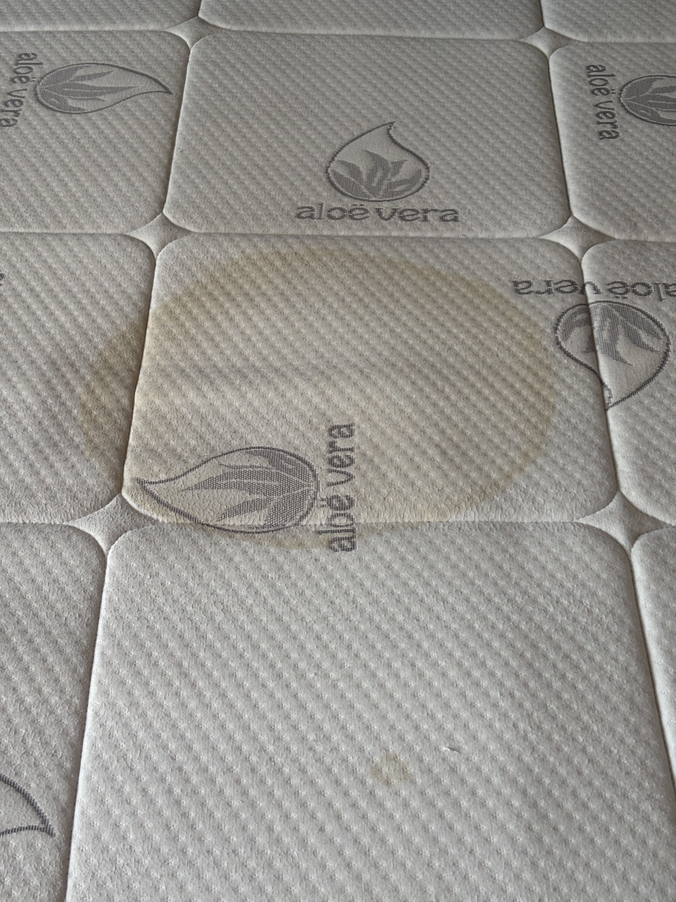
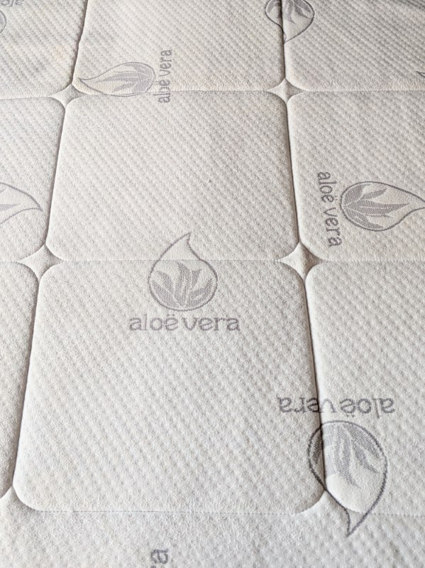
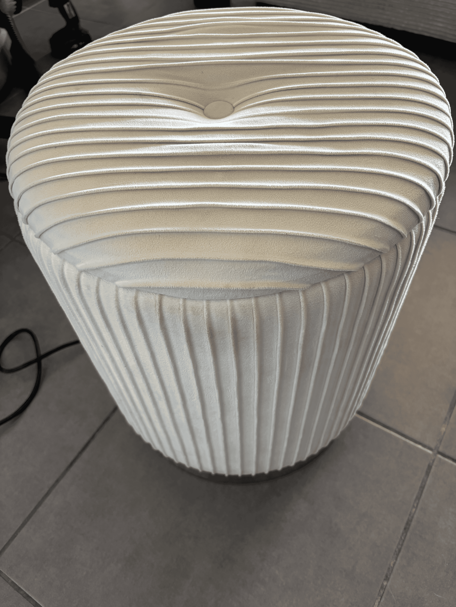
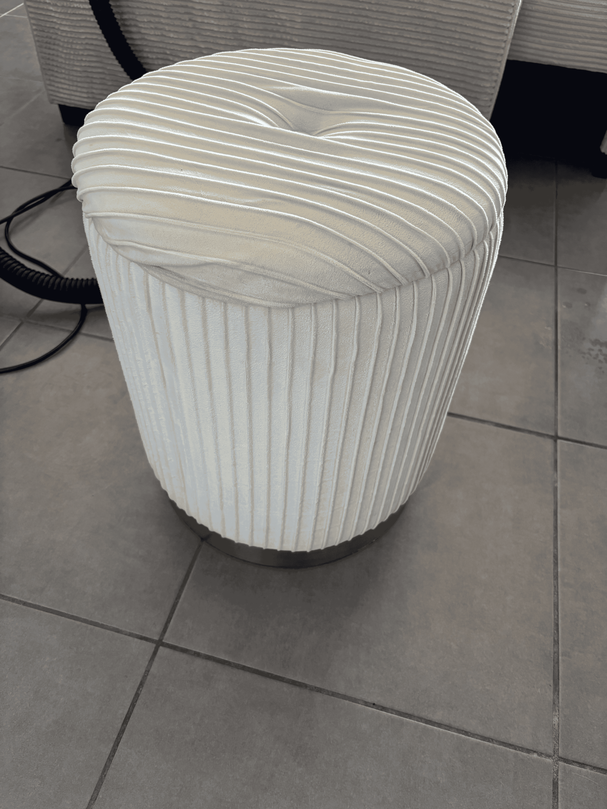
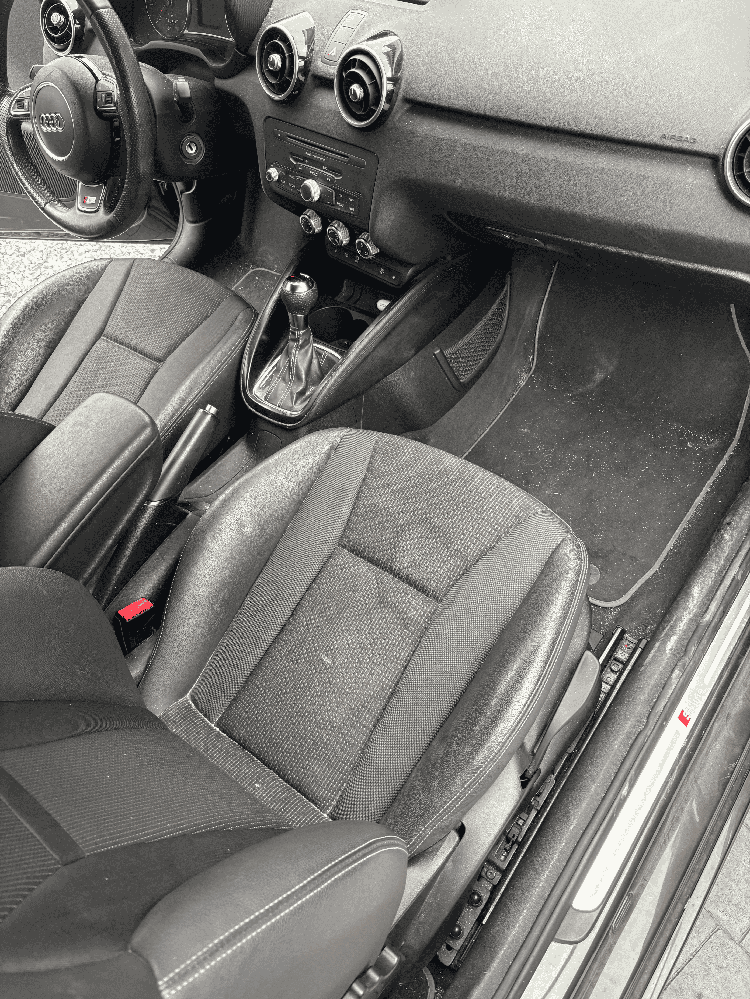
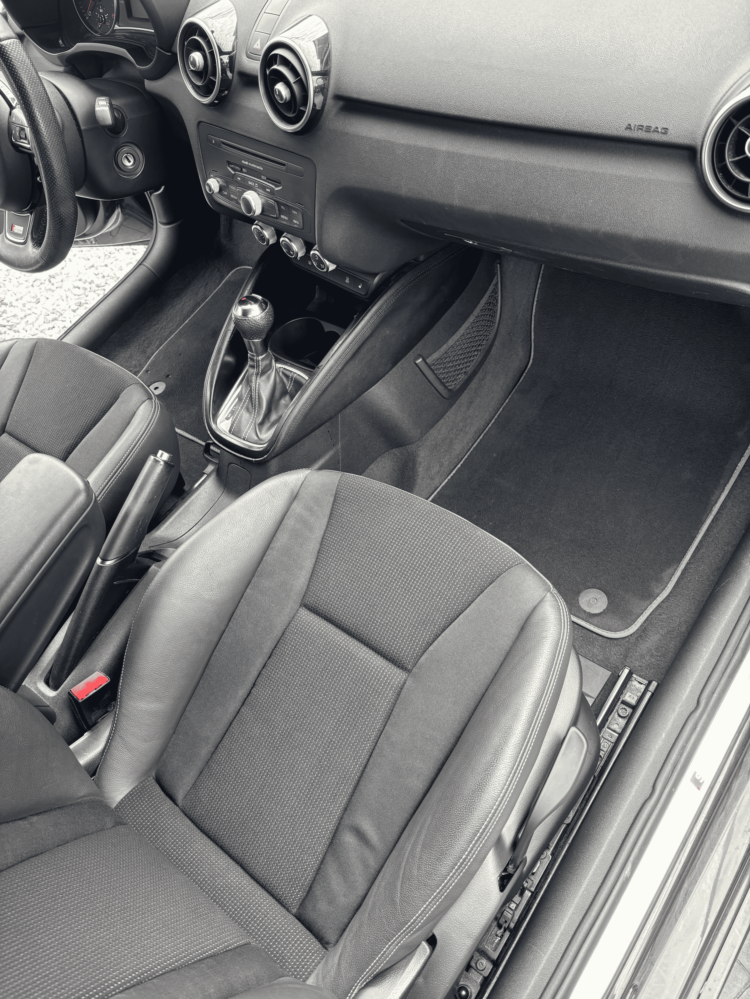
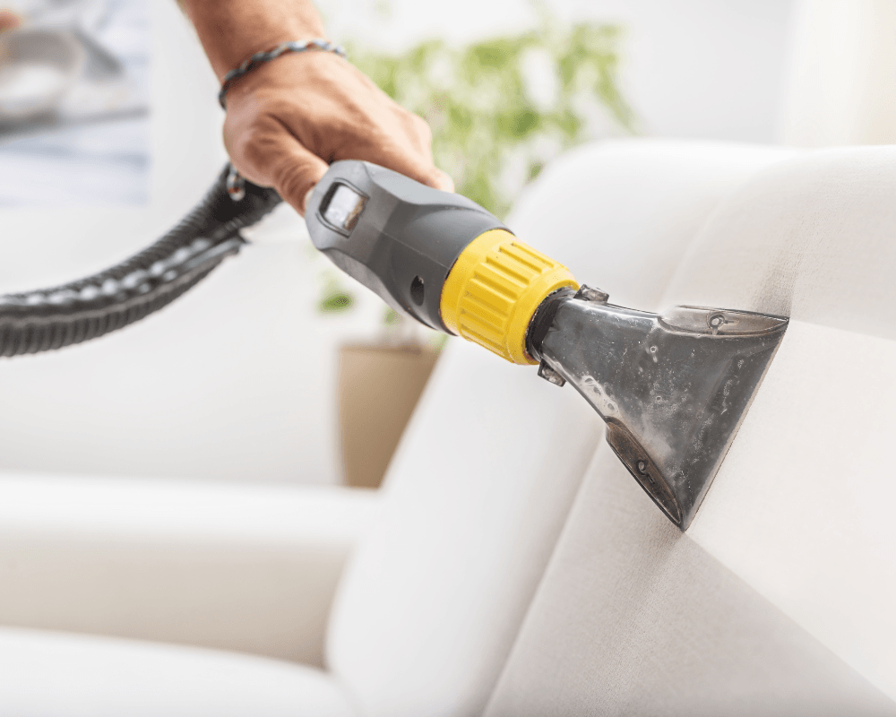
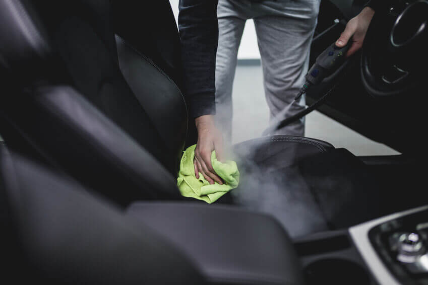
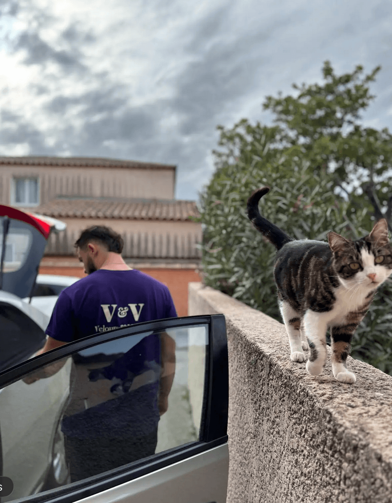

Matelas – Mobilier textile – Intérieur véhicule
Chez Velours et Vapeur, nous sublimons vos textiles avec un nettoyage écologique haut de gamme, à Perpignan et dans les Pyrénées-Orientales. Canapés, matelas, véhicules, tapis ou moquettes : nous éliminons en profondeur taches, odeurs, bactéries et acariens grâce au nettoyage par l’injection-extraction et à la désinfection vapeur haute température, sans produits agressifs. Nous intervenons pour des nettoyages textiles à domicile pour particuliers et professionnels, et toujours avec le sourire !
100%
Écologique
Haute T°
Désinfection
À Domicile
Sur site (66)
Savoir-faire

Avant
AprèsÉlimination des auréoles, transpirations et acariens en profondeur.

Avant
AprèsCanapés, fauteuils, tapis et moquettes rafraîchis et assainis.

Avant
AprèsSièges, moquettes et habitacles remis à neuf sans effort.
Notre Procédé


Nos Offres
Professionnels de Perpignan et des Pyrénées-Orientales, Velours et Vapeur prend soin de vos textiles d'ameublement et de vos véhicules avec un nettoyage écologique haut de gamme. Nous intervenons pour les hôtels, restaurants, locations courte durée, campings, cinémas, auto-écoles, garages, concessions, flottes de véhicules, centres de loisirs ou encore dans des salles d’attente.
Canapés, matelas, tapis, moquettes ou intérieurs de véhicules : nous éliminons en profondeur taches, odeurs, bactéries et acariens en combinant nettoyage de textiles par injection-extraction et désinfection vapeur haute température, pour un nettoyage profond, respectueux de la santé, de vos matériaux... et de l'environnement !
Faire appel à Velours et Vapeur, c'est valoriser votre image de marque, offrir une expérience client impeccable, encourager des retours positifs et fidéliser vos clients, tout en préservant vos investissements mobilier et véhicule.
Une solution professionnelle, écologique et durable qui allie performance, hygiène et élégance !
Vous souhaitez un nettoyage de canapé, un entretien de vos matelas ou une remise en état de l'intérieur de votre véhicule ? Pour les particuliers à Perpignan et dans les Pyrénées-Orientales, Velours et Vapeur intervient directement chez vous pour un nettoyage à domicile de tous vos textiles !
Fauteuil, literie, tapis ou habitacle de véhicules : nous éliminons taches, odeurs, bactéries et acariens grâce à un nettoyage injection-extraction et une désinfection vapeur, sans produits agressifs.
Profitez d'un intérieur sain et confortable, prolongez la vie de vos meubles et véhicules, et laissez-nous apporter bonheur et légèreté à votre quotidien, sans que vous ayez à bouger !

Fondateur & Artisan
Moi, c'est Guillaume. Beaucoup d'idées, plein de convictions et une bonne dose de motivation, mais surtout le sens du service, la sympathie, la bonne humeur, et la volonté profonde de remettre l'humain au cœur de notre quotidien !
Perpignan, c'est ma ville : j'y ai grandi, étudié, me suis formé, et aujourd'hui j'y ai fondé Velours et Vapeur.
Depuis le début, ma mission est simple : offrir un nettoyage de textiles efficace, respectueux de vos biens et de l'environnement, tout en semant un peu de sourires, de confort et de légèreté dans votre quotidien. Je suis convaincu qu'un intérieur propre et sain contribue réellement à votre bien-être !
Pourquoi choisir le nettoyage écologique ? Parce qu'aujourd'hui, on sait : la surconsommation a des conséquences. Racheter plutôt qu'entretenir ? Non merci ! Je m'engage donc à prolonger la durée de vie de vos meubles textiles, tout en préservant votre santé et celle de votre famille.
Témoignages
"J'ai fait appel à Velours et Vapeur pour le nettoyage de mon canapé, de mon tapis et de mes chaises de salle à manger. Les tissus ont retrouvé leur couleur d'origine et le résultat est impressionnant. L'intervention a été rapide, efficace et très professionnelle. Guillaume a pris le temps de m'expliquer les avantages du nettoyage textile par injection-extraction et de la désinfection à la vapeur écologique. Je recommande Velours & Vapeur !"
— Sophie R. (Perpignan)
"Je prends soin de mon matelas... et malgré ça, je continuais de tousser tous les soirs en me couchant à cause des acariens. J'ai fait appel à Velours et Vapeur et là... enfin je ne tousse plus !! Quel soulagement. Un vrai nettoyage de matelas, avec les fibres nettoyées en profondeur et ça se ressent tout de suite. Merci beaucoup pour cette intervention rapide, efficace et avec le sourire."
— Marc A. (Canet-en-Roussillon)